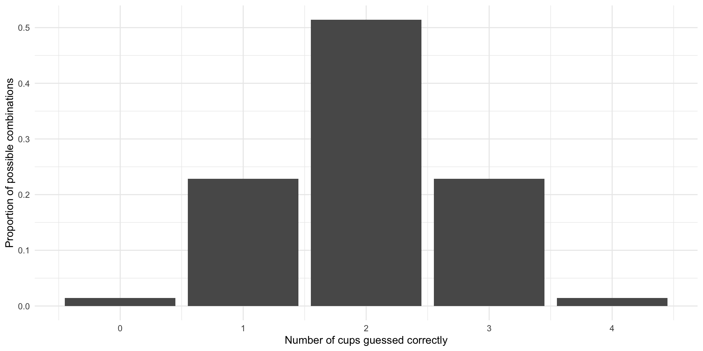
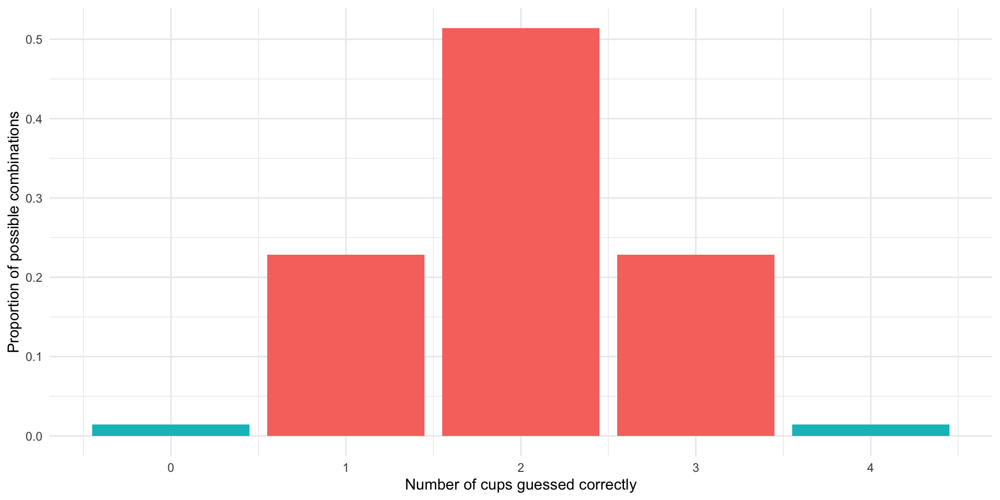

install.packages(c("tidyverse"))Session 6: Introduction to Hypothesis Testing
Introduction
In the summer of 1920s England, a revolutionary experiment unfolded over tea. The statistician Ronald A. Fisher, renowned for his work in experimental design, found himself engaged in a curious debate with psychologist Muriel Bristol, who claimed she could tell whether milk had been poured into tea first or added afterward—purely by taste. Skeptical but intrigued, Fisher devised a rigorous test to assess her ability, setting the stage for what would become a foundational moment in modern statistics.
For this experiment, he prepared eight cups of tea—four poured milk-first, and four poured tea-first. He then presented them to her one at a time and in a random order for tasting. If she were merely guessing, probability dictated she would struggle to identify them correctly. But if she possessed the skill she claimed, her success would not be due to chance. The experiment, simple in design yet profound in implication, not only tested a seemingly trivial assertion but laid the groundwork for statistical hypothesis testing, introducing the logic of significance tests that underpin scientific inquiry today.
This session, I am going to introduce you to hypothesis testing by stepping through this experiment and then applying its structure more generally. So, brew yourself a cup and let’s get started!
Set up
To complete this session, you need to load in the following R packages:
Install packages
To install new R packages, run the following (excluding the packages you have already installed):
The lady and her tea
Bristol is offered the eight cups of tea, four of which were poured with milk first and four of which were poured with tea first. They were presented in a completely random order. Let’s simulate that:
Tip
Because we are working with randomization, you will get different results to me unless you set your seed to the one I am using. To do this, run:
set.seed(1234)cups <- c(rep("Milk-first", 4), rep("Tea-first", 4))
order <- sample(cups, size = 8, replace = F)
order[1] "Milk-first" "Milk-first" "Tea-first" "Tea-first" "Tea-first"
[6] "Milk-first" "Milk-first" "Tea-first" She tastes each in turn and elects whether she thinks it was poured milk- or tea-first. She knows that four cups were prepared of each method. Fisher will then count how many she guessed correctly.
If she, in fact, cannot distinguish between cups of tea poured milk- or tea-first, she will have to just guess randomly for each cup. The beauty of this experiment is that we know exactly how likely she would be to guess randomly any number of the cups correctly. Let’s step through how we know that.
Blind luck
Fisher is interested in how many cups Bristol guesses correctly. We can simplify this by looking at how many of the four cups prepared by one method - milk- or tea-first - she correctly identifies. Let’s stick with milk-first.
There are 70 different possible combinations of four cups that she could guess were poured milk-first. Let’s generate those (and then look at the first few):
sample_space <- combn(c("First cup", "Second cup", "Third cup", "Fourth cup",
"Fifth cup", "Sixth cup", "Seventh cup", "Eighth cup"),
4, simplify = F)
sample_space[1:5][[1]]
[1] "First cup" "Second cup" "Third cup" "Fourth cup"
[[2]]
[1] "First cup" "Second cup" "Third cup" "Fifth cup"
[[3]]
[1] "First cup" "Second cup" "Third cup" "Sixth cup"
[[4]]
[1] "First cup" "Second cup" "Third cup" "Seventh cup"
[[5]]
[1] "First cup" "Second cup" "Third cup" "Eighth cup"If she guessed randomly, each of these 70 possible combinations are equally likely to have been selected. Of course, the correct answer is included in these. In other words, even if she cannot distinguish between teas poured milk- or tea-first, she may – through sheer blind luck – still guess correctly.
Just how lucky would she need to be? Well, there is only one correct answer, so she has a one in 70 (or 1%) chance of guessing correctly. She would, therefore, need to be very lucky! Fisher would probably concede his skepticism and believe that she possessed this special skill.
Now, what if she correctly guessed three of the four milk-first cups? Or two? Or one? How likely are any of these outcomes to occur if she is lying about her ability to distinguish these teas? To answer this, we first need to calculate how many cups in each possible combination would be guessed correctly:
correct_guess <- tibble(order,
position = c("First cup", "Second cup", "Third cup",
"Fourth cup", "Fifth cup", "Sixth cup",
"Seventh cup", "Eighth cup")) |>
filter(order == "Milk-first") |>
pull(position)
correct_guess[1] "First cup" "Second cup" "Sixth cup" "Seventh cup"n_correct_guesses <- map(sample_space, ~ sum(correct_guess %in% .x)) |>
unlist()
possible_results <- tibble(combination_num = 1:70, n_correct_guesses)
possible_results# A tibble: 70 × 2
combination_num n_correct_guesses
<int> <int>
1 1 2
2 2 2
3 3 3
4 4 3
5 5 2
6 6 2
7 7 3
8 8 3
9 9 2
10 10 3
# ℹ 60 more rowsNow we can calculate what proportion of these 70 possible combinations had each number of correctly guessed cups:
prop_outcomes <- possible_results |>
count(n_correct_guesses) |>
mutate(prop = n / sum(n))
prop_outcomes# A tibble: 5 × 3
n_correct_guesses n prop
<int> <int> <dbl>
1 0 1 0.0143
2 1 16 0.229
3 2 36 0.514
4 3 16 0.229
5 4 1 0.0143So, if Bristol is simply guessing she will be entirely incorrect 1% of the time, guess one milk-first cup correctly 23% of the time, most commonly (51% of the time) correctly guess two cups, guess three cups correctly 23% of the time, or guess all four milk-first cups 1% of the time.
Exercise
Can you see why the most common outcome is two correctly guessed cups? In other words, why she is correct 50% of the time when guessing randomly?
Notice that these probabilities are symmetrically distributed. Let’s plot them so we can get a better sense of this:
ggplot(prop_outcomes, aes(x = n_correct_guesses, y = prop)) +
geom_col() +
theme_minimal() +
labs(x = "Number of cups guessed correctly",
y = "Proportion of possible combinations")
This is very useful to us because we can now place her one guess within this context.
For example, imagine that she correctly guesses two of the four milk-first cups. Should we believe in her party trick? No! This is the most likely outcome if she is guessing the cups at random. We should infer from her two correctly identified cups that she is most likely guessing randomly.
On the other hand, imagine she correctly guesses all four of the milk-first cups. Of course, she could still just be guessing randomly. However, she is highly unlikely to have pulled this off. We know that this only happens 1% of the time. We can infer from this that she probably possesses the ability to distinguish between tea poured milk- or tea-first.
Note
Muriel Bristol ended up correctly identifying all eight cups of tea. Pretty cool!
This is how we test hypotheses. We start by assuming we are incorrect. We then ask how likely we are to observe what we did if we are incorrect. If we are very unlikely to have observed what we did if we are incorrect, we can infer that we are, in fact, correct (with some level of confidence). Let’s reframe Fisher’s experiment using the language of hypothesis testing.
Hypothesis testing
Fisher tested whether Bristol could correctly identify whether milk had been poured into tea first or added afterward purely by taste. His null hypothesis is, therefore, that she cannot distinguish by taste between teas poured milk- or tea-first. She is just guessing at random.
His alternative hypothesis is that she can distinguish by taste between teas poured milk- or tea-first. If the alternative hypothesis is correct, Bristol will correctly identify a greater number of cups than we would expect her to be able to if guessing randomly.
The outcome we observe – our test statistic – is the count of the number of cups she correctly identifies. Our goal is to work out how likely we are to observe our test statistic if the null hypothesis is correct. In other words, how likely is Bristol to correctly identify the number of cups she did if she is just guessing randomly.
We set up this null world above:
ggplot(prop_outcomes, aes(x = n_correct_guesses, y = prop)) +
geom_col() +
theme_minimal() +
labs(x = "Number of cups guessed correctly",
y = "Proportion of possible combinations")
This is the sample distribution of all possible correct but random guesses Bristol could make. She is highly unlikely to be able to guess correctly all four milk-first cups. If she does this (i.e. our test statistic is four cups), we can infer that she probably wasn’t guessing. We can reject the null hypothesis that she was.
Other outcomes are more likely under the null hypothesis. For example, if she is guessing, she will most commonly correctly identify two of the four milk-first cups. If she does this, we cannot rule out that she is simply guessing randomly. We cannot, therefore, reject the null hypothesis.
Other outcomes are less clear-cut. For example, she is only likely to guess three of the four milk-first cups correctly 23% of the time. If she does this, do you rule out that she is guessing?
We cannot be 100 percent certain that Bristol is not guessing (or, more broadly, that the null hypothesis can be rejected). Instead, we need to select some threshold beyond which we are satisfied and can reject the null hypothesis. This is referred to as your decision rule.
Note
Academic journals often set this threshold at 5 percent (which is more commonly denoted \(\alpha = 0.05\)). In other words, we are happy to accept that we will incorrectly reject the null hypothesis 5 percent of the time. This relates to the p-value, which we will get to shortly. You may have heard of people referring to statistical significance at the “point-O-five level”. This is what they are referring to!
How weird is our test statistic?
We reject the null hypothesis if our test statistic is unlikely to have occurred under that null hypothesis. In other words, if we observed something occurring that would be really weird to see if the null hypothesis were true. In true form, statisticians have come up with a way of quantifying this weirdness: the p-value.
We have started this process. We calculated how likely we were to observe each possible outcome under the null hypothesis:
ggplot(prop_outcomes, aes(x = n_correct_guesses, y = prop)) +
geom_col() +
theme_minimal() +
labs(x = "Number of cups guessed correctly",
y = "Proportion of possible combinations")
The p-value is defined as the probability that we observed the test statistic or a more extreme test statistic under the null hypothesis.
For example, the p-value of Bristol correctly identifying all four milk-first cups is 0.01. Further, the p-value of Bristol correctly identifying three of the four milk-first cups is 0.24 (the probability she correctly identifies three cups plus the probability she correctly identifies four).
Exercise
What is the p-value of her identifying two cups correctly?
Check your answer
The p-value of her correctly identifying two of the four cups is 0.76.
Note that a smaller p-value indicates stronger support for the alternative hypothesis. As noted above, we tend to have a threshold that defines our tolerance for accidentally rejecting a true null hypothesis. Academic journals tend to accept p-values of 0.05 or less as being statistically significant. What they mean by this is that they think that a test statistic that could occur only five percent or less of the time under the null hypothesis is weird enough that they will reject that null hypothesis.
Bristol guessed all four milk-based cups correctly. This would only happen 1% of the time if she were guessing randomly. This is a p-value of 0.01, which is less than 0.05, so we can say that it is statistically significant at the 0.05-level.
One- and two-sided tests
Note that the p-value is defined as the probability that we observed the test statistic or a more extreme test statistic under the null hypothesis. What do we mean by this “more extreme” outcome?
Hypotheses can be either directional or non-directional. A directional hypothesis specifies that the expected outcome will either be greater or less than some value (the null hypothesis). A non-directional hypothesis does not place this constraint on the potential outcome.
For example, Fisher’s Tea Tasting Experiment was directional. Bristol claimed she could identify all the cups correctly. She was equally unlikely to incorrectly guess all cups as she was to correctly guess them, but had she got no cups right, we would most definitely reject the alternative hypothesis that she can distinguish the teas based only on taste.
Non-directional hypotheses, on the other hand, simply ask how likely we are to get an outcome different from the one most likely to occur under the null hypothesis. This can be a little tricky to wrap your head around, so we will step through it.
Imagine Bristol’s claim is not that she can identify which cups were poured first with milk and first with tea, but that she can simply tell the difference between the two. Give her two cups and she will be able to say whether or not they were brewed using the same or different methods. She will have demonstrated she possesses this skill even if she incorrectly guesses all the cups, assigning milk-first to tea-first cups and vice versa. She can clearly tell they are different, just not which is which.
The likelihood that she would be able to either guess all correctly or all incorrectly is 3%:
ggplot(prop_outcomes, aes(x = n_correct_guesses, y = prop)) +
geom_col(aes(fill = n_correct_guesses %in% c(0, 4))) +
theme_minimal() +
theme(legend.position = "none") +
labs(x = "Number of cups guessed correctly",
y = "Proportion of possible combinations")
The p-value of these outcomes (0.03) is still less than 0.05, so we can still reject the null hypothesis that she is guessing randomly at the 0.05-level.
Note that non-directional null hypotheses are more difficult to reject. The symmetric nature of the sampling distribution means that you are doubling the probability that you would observe your test statistic or a more extreme value of it if the null hypothesis is true. These non-directional tests are called two-tailed tests.
Note
Most political science research translates into directional hypotheses. However, most researchers still subject their empirical analyses to two-tailed tests. This is because scientists tend to be conservative. They are more willing to accidentally fail to reject a false null hypothesis than they are to reject a true null hypothesis. An analogy might help here. Doctors are more willing to assume someone has cancer who does not, in fact, have cancer than they are to let someone with cancer go untreated because they made a mistake.